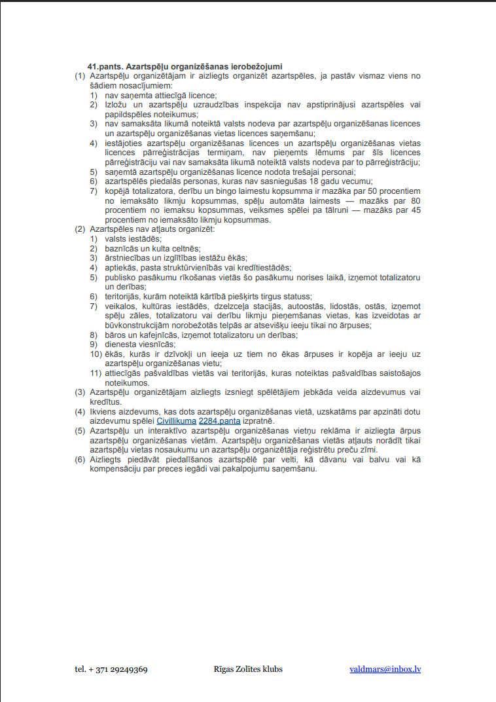
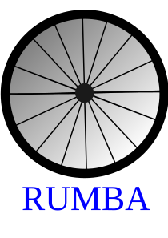
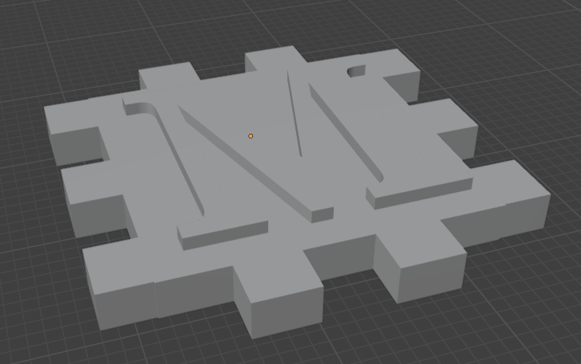
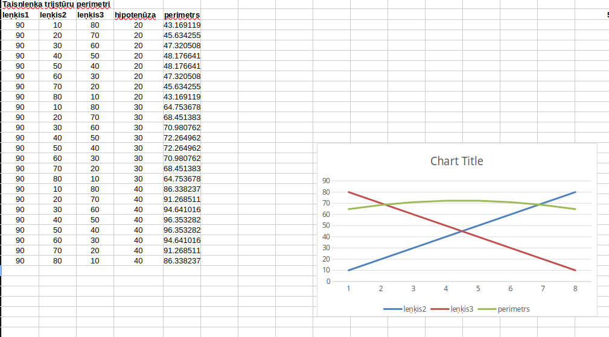

Mans portfolio
Markus Raudenieks
Tekstapstrāde
Šogad datorikas stundās jau atkal turpināju apgūt Microsoft Word programmatūru. Iemācījos sev jaunus un advancētus trikus. Jaunās zināšanas liku lietā formatējot veidlapu par Azartspēļu organizēšanas noteikumiem, kas apskatāma tepat blakus, kā arī lejupielādējama PDF formātā šeit.
Skolā apgūtās Microsoft Word zināšanas man noderēs dažnedažādākajos gadījumos visa mūža laikā, piemēram:
- Sagatavojot laboratorijas darbu aprakstus
- Izsūtot ielūgumus uz kādu pasākumu, izmantojot "Mail merge" funkcionalitāti
- Rakstot savu ZPD vai ar IB saistītus rakstu darbus

Attēlu apstrāde
Rastra grafika
Attēlu apstrādes apguves ietvaros es apguvu kā izmantot GIMP programmatūru attēlu apstrēdei un GIF animēciju izveidei

Vektorgrafika
Mācoties par vektorgrafiku, es apguvu ne tikai Inkscape programmatūras izmantošanu, bet arī logo dizaina pamatus. Viens no uzdevumiem bija izveidot logo iedomātam uzņēmumam. Es izveidoju šo:

3D Modelēšana
Šogad apguvu vektorgrafiku ne tikai divās, bet arī trīs dimensijās, un piedalījos 3D drukāta kubiņa izveidē. Pats izveidoju vienu no sešām kubiņa skaldnēm un piedzīvoju tā izdrukāšanu.

Video apstrāde
Vēl viena no šī gada datorikas tēmām bija video montāža, kuras ietvaros nācās izveidot video par iepriekš minētā 3D kubiņa izveidi.
Izklājlapas
Manuprāt, gada visinteresantākā un noderīgākā tēma bija izklājlapas, proti, darbs ar Microsoft Excel. Apguvu ne tikai jaunas un noderīgas funkcijas, bet arī citas darbības ar Excel, kā datu sagatavošana drukāšanai vai "Pivot Table" jeb "Rakurstabulu" izmantošanu
Savas zināšanas pierādīju rakstot pārbaudes darbu, kura kopija pieejama šeit.
